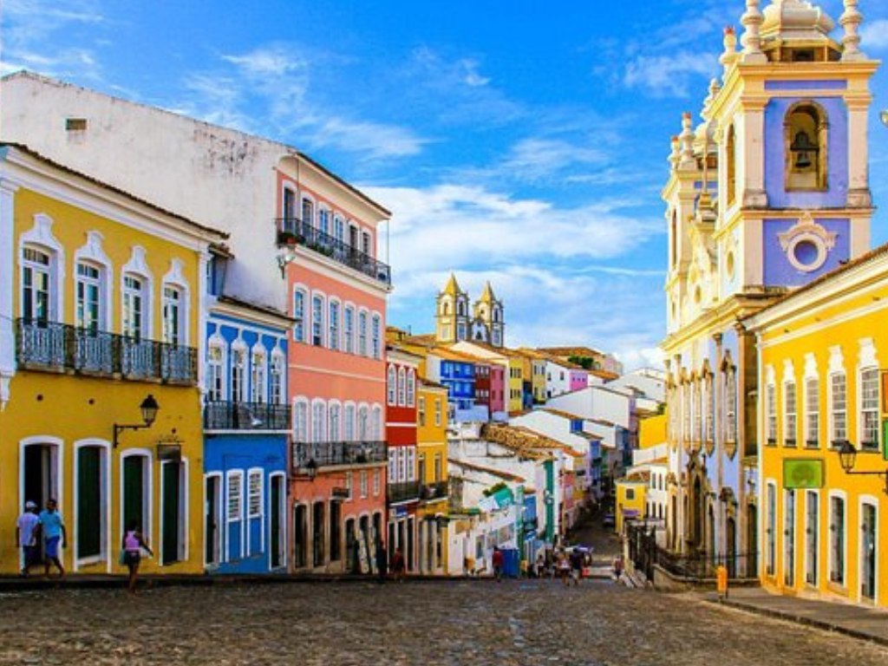

O estado da Bahia é um dos mais importantes e conhecidos da Região Nordeste do Brasil, destacando-se por sua grande influência histórica, cultural e econômica. Sua capital, Salvador, foi a primeira capital do país e possui um rico patrimônio histórico, com igrejas, casarões coloniais e manifestações culturais marcantes. A Bahia é famosa por suas belas praias, pela culinária típica com influência africana e por ritmos musicais como o axé e o samba-reggae. Além do turismo, o estado possui forte atuação na agricultura, na indústria e na produção de energia. A cultura baiana, marcada pela diversidade e pelas tradições afro-brasileiras, exerce grande influência na identidade cultural do Brasil.

Voltar